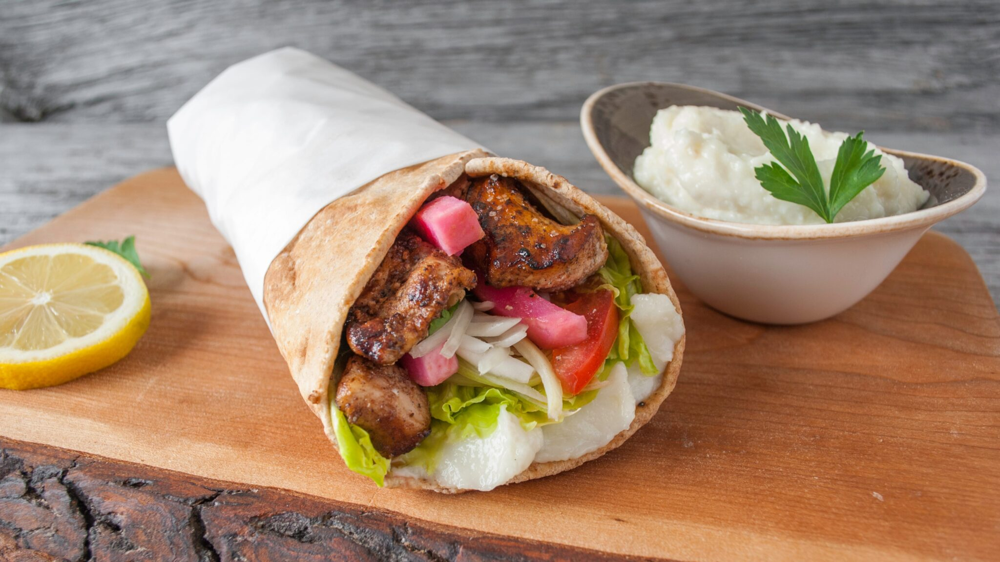
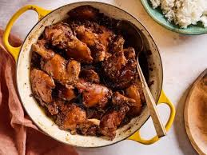

Food
Asia is very large, which means it's also diverse. Well, it's very evident in their cuisine. Different parts of Asia have different styles of cuisine because they use the resources around them. Some food, however, was invented due to fusion of cultures during trading or invasions.
Asian Cuisine
| Dish | (DISH NAME - Country) | Part of the World | Description |
|---|---|---|---|
|  | (SHAWARMA - Turkey) | Southwest Asia (Middle East) | This dish consists of thin slices of meat and vegetables wrapped in pita bread. |
 |
(KIMCHI - Korea) | Northeast Asia | This dish is made by fermenting cabbage in spicy paste. This dish can also be found in China and Japan but it's named with a different name. |
|  | (ADOBO - Philippines) | Southeast Asia | This dish is made by simmering marinated pork or chicken (or both) using spices. |